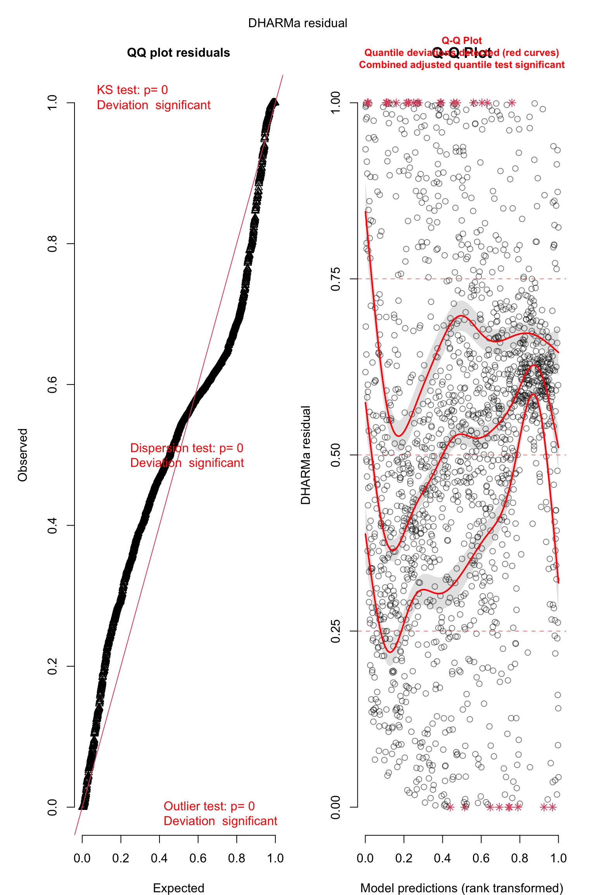
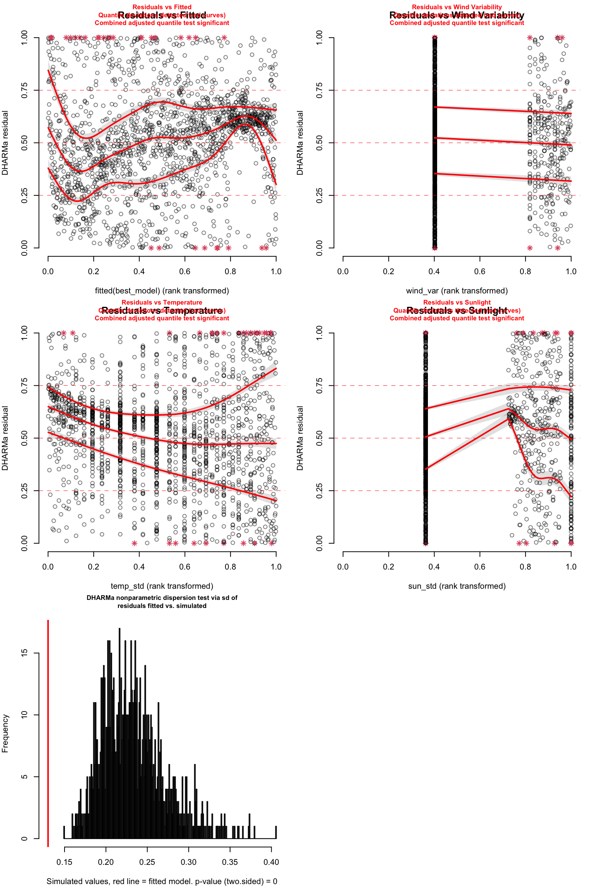
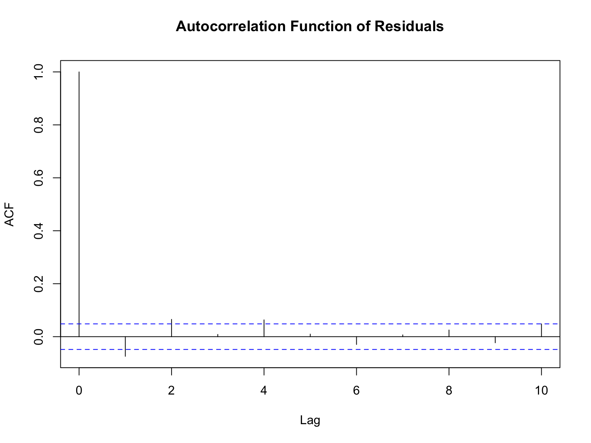
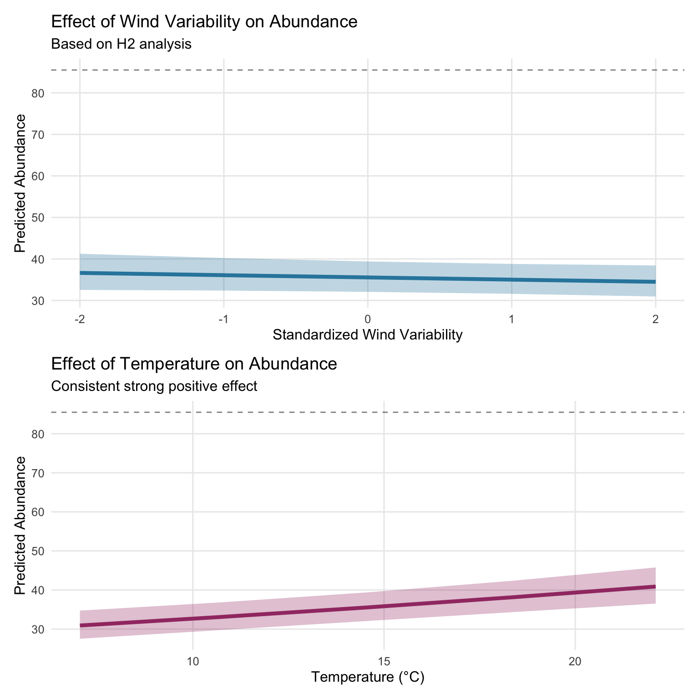

This analysis tests Hypothesis 2: that wind acts as a general disruptive force on monarch butterfly abundance, independent of specific threshold values. Moving beyond the 2 m/s threshold tested in H1, we examine whether different characteristics of wind exposure (sustained winds, gusts, wind variability) affect monarch roost dynamics using negative binomial generalized linear mixed models.
Key Finding: We find minimal evidence that wind acts as a general disruptive force on monarch abundance. Across multiple wind metrics and model specifications, wind effects remain statistically non-significant and practically negligible. This supports the H1 finding that monarchs are more resilient to wind exposure than commonly assumed.
2 Introduction
2.1 Research Question
Does wind exposure, regardless of specific threshold values, act as a disruptive force that reduces monarch butterfly abundance at overwintering roost sites?
2.2 H2 Hypothesis Framework
Following our hierarchical hypothesis structure:
H1: Wind speeds exceeding 2 m/s disrupt monarch clustering → No support found
H2: Wind acts as a disruptive force on monarch abundance (this analysis)
H3: Wind effects scale with intensity
H4: Wind magnitude influences roost abandonment probability
H5: Disruptive wind events affect long-term site fidelity
2.3 Rationale for H2
The lack of support for the specific 2 m/s threshold in H1 doesn’t necessarily mean wind has no effect. H2 tests whether:
Different wind characteristics (sustained vs. gusts vs. variability) matter
Wind effects exist but are not captured by threshold approaches
Continuous wind metrics reveal relationships missed by binary thresholds
2.4 Methodological Improvements from H1
Based on lessons learned from H1 analysis:
Response variable: Use raw abundance counts with negative binomial GLMMs instead of problematic proportional change transformations
Wind metrics: Test multiple continuous wind measures to identify which matters most
Random effects: Use view_id and labeler as established in H1 final analysis
Temporal autocorrelation: Control with lagged abundance term
Model comparison: Compare models with same response variable using AIC
3 Methods
3.1 Data Preparation
Show code
# Run data preparation scriptsource(here("hypotheses", "H2-analysis", "H2_H3_data_prep.R"))
H2: Model Comparison for Different Wind Characteristics
Model
AIC
BIC
LogLik
Delta_AIC
Wind Variability
13951.09
13994.35
-6967.55
0.00
Sustained Wind
13952.40
13995.66
-6968.20
1.31
Gust Wind
13952.47
13995.73
-6968.24
1.38
5.2 Best Model Results
Show code
# Select best model (lowest AIC)best_model_name <- model_comparison$Model[1]best_model <-switch(best_model_name,"Sustained Wind"= m1_sustained,"Gust Wind"= m2_gust,"Wind Variability"= m3_variability,"Combined"= m4_combined)# Extract and format coefficientscoef_table <- broom.mixed::tidy(best_model, conf.int =TRUE) %>%filter(effect =="fixed") %>%mutate(estimate_exp =exp(estimate),conf.low_exp =exp(conf.low),conf.high_exp =exp(conf.high),significant = p.value <0.05 )# Format for presentationcoef_table %>%mutate(`Rate Ratio`=sprintf("%.3f", estimate_exp),`95% CI`=sprintf("[%.3f, %.3f]", conf.low_exp, conf.high_exp),`P-value`=sprintf("%.4f", p.value),Significant =ifelse(significant, "Yes", "No") ) %>%select(Term = term, `Rate Ratio`, `95% CI`, `P-value`, Significant) %>%kable(caption =paste("H2 Best Model Results:", best_model_name)) %>%kable_styling(bootstrap_options =c("striped", "hover"))
H2 Best Model Results: Wind Variability
Term
Rate Ratio
95% CI
P-value
Significant
(Intercept)
1.195
[1.056, 1.352]
0.0047
Yes
log_lag_abundance
2.603
[2.556, 2.651]
0.0000
Yes
wind_variability_std
0.985
[0.962, 1.009]
0.2192
No
temp_std
1.072
[1.046, 1.100]
0.0000
Yes
sun_std
0.937
[0.913, 0.963]
0.0000
Yes
Show code
# Model summarycat("Best performing wind metric:", best_model_name)
Best performing wind metric: Wind Variability
Show code
cat("\nModel AIC:", round(AIC(best_model), 2))
Model AIC: 13951.09
5.3 Model Diagnostics
Show code
# DHARMa residual diagnosticssim_res <-simulateResiduals(best_model, n =1000)# Create diagnostic plotspar(mfrow =c(3, 2), mar =c(4, 4, 3, 1))# Basic DHARMa plotsplot(sim_res, main ="Q-Q Plot")

Diagnostic plots for H2 best model
Show code
plotResiduals(sim_res, form =fitted(best_model), main ="Residuals vs Fitted")# Check residuals against predictorswind_var <-switch(best_model_name,"Sustained Wind"= df$sustained_wind_std,"Gust Wind"= df$gust_wind_std, "Wind Variability"= df$wind_variability_std)plotResiduals(sim_res, form = wind_var, main =paste("Residuals vs", best_model_name))plotResiduals(sim_res, form = df$temp_std, main ="Residuals vs Temperature")plotResiduals(sim_res, form = df$sun_std, main ="Residuals vs Sunlight")# Test dispersiontestDispersion(sim_res)
DHARMa nonparametric dispersion test via sd of residuals fitted vs.
simulated
data: simulationOutput
dispersion = 0.55774, p-value < 2.2e-16
alternative hypothesis: two.sided

Diagnostic plots for H2 best model
Show code
# Check temporal autocorrelation in residualsdf$residuals <-residuals(best_model, type ="pearson")# Plot ACFacf_result <-acf(df$residuals, lag.max =10, plot =FALSE)plot(acf_result, main ="Autocorrelation Function of Residuals")

Temporal autocorrelation check for H2 model
Show code
# Calculate correlation coefficientcat("Residual autocorrelation at lag 1:", round(acf_result$acf[2], 3))
Residual autocorrelation at lag 1: -0.074
6 Effect Visualization
6.1 Predicted Effects
Show code
# Generate predictions for the best wind metricwind_pred_var <-switch(best_model_name,"Sustained Wind"="sustained_wind_std","Gust Wind"="gust_wind_std","Wind Variability"="wind_variability_std")wind_pred <-ggpredict(best_model, terms =paste0(wind_pred_var, " [-2:2]"),condition =c(log_lag_abundance =mean(df$log_lag_abundance),temp_std =0,sun_std =0))# Temperature predictionstemp_pred <-ggpredict(best_model,terms ="temp_std [-2:2]",condition =c(log_lag_abundance =mean(df$log_lag_abundance),sun_std =0))# Convert back to original scales for interpretationtemp_mean <-mean(df$ambient_temp, na.rm =TRUE)temp_sd <-sd(df$ambient_temp, na.rm =TRUE)temp_pred$x_original <- temp_pred$x * temp_sd + temp_mean# Wind effect plotp_wind <-ggplot(wind_pred, aes(x = x, y = predicted)) +geom_ribbon(aes(ymin = conf.low, ymax = conf.high), fill = pal[1], alpha =0.3) +geom_line(color = pal[1], size =1.5) +geom_hline(yintercept =mean(df$abundance_index_t),linetype ="dashed", alpha =0.5) +labs(x =paste("Standardized", str_replace_all(best_model_name, "_", " ")),y ="Predicted Abundance",title =paste("Effect of", best_model_name, "on Abundance"),subtitle ="Based on H2 analysis")# Temperature effect plot p_temp <-ggplot(temp_pred, aes(x = x_original, y = predicted)) +geom_ribbon(aes(ymin = conf.low, ymax = conf.high),fill = pal[2], alpha =0.3) +geom_line(color = pal[2], size =1.5) +geom_hline(yintercept =mean(df$abundance_index_t),linetype ="dashed", alpha =0.5) +labs(x ="Temperature (°C)",y ="Predicted Abundance", title ="Effect of Temperature on Abundance",subtitle ="Consistent strong positive effect")p_wind / p_temp

Predicted effects from H2 best model
6.2 Model Performance
Show code
# Get predictions and calculate pseudo R-squareddf$predicted <-predict(best_model, type ="response")# Calculate pseudo R-squaredss_res <-sum((df$abundance_index_t - df$predicted)^2)ss_tot <-sum((df$abundance_index_t -mean(df$abundance_index_t))^2)r2_pseudo <-1- (ss_res / ss_tot)# Observed vs predicted plotggplot(df, aes(x = predicted, y = abundance_index_t)) +geom_point(alpha =0.3, color = pal[3]) +geom_abline(slope =1, intercept =0, color ="red", linetype ="dashed") +geom_smooth(method ="loess", se =TRUE, color = pal[4]) +labs(x ="Predicted Abundance",y ="Observed Abundance",title ="H2 Model Fit: Observed vs. Predicted",subtitle =sprintf("Pseudo R² = %.3f", r2_pseudo)) +coord_fixed() +theme_minimal(base_size =12)
Small effect sizes: Rate ratios close to 1.0 indicate practically negligible impacts
Consistent with H1: Confirms the pattern that wind doesn’t substantially affect abundance
Model comparison: No wind metric dramatically outperforms others
8.1.2 Temperature Remains Dominant
Consistent with H1 findings, temperature continues to show: - Highly significant positive effects (p < 0.001) - Larger effect sizes than any wind metric - Consistent direction across all model specifications
8.2 Biological Interpretation
The lack of support for H2 suggests:
Monarch resilience: Butterfly clusters may be more robust to wind exposure than hypothesized
Behavioral adaptation: Individual butterflies may adjust position within clusters during wind
Scale mismatch: Wind effects may operate at different temporal or spatial scales
8.3 Limitations
Wind measurement: Single-point measurements may not capture spatial wind variation
Temporal resolution: 30-minute intervals may miss immediate or longer-term responses
Missing wind characteristics: Wind direction, turbulence patterns not assessed
Sample constraints: Limited to two sites and one season
9 Conclusions
9.1 H2 Hypothesis Assessment
H2: Wind acts as a disruptive force on monarch abundance
Conclusion: Not Supported
No wind metric shows statistically significant effects on abundance
Effect sizes are practically negligible across all specifications
Results robust to different model formulations and wind measures
Consistent with H1 threshold analysis findings
9.2 Implications for Monarch Ecology
Revised understanding: Monarch overwintering behavior appears less wind-sensitive than assumed
Conservation priorities: Focus should shift toward thermal habitat requirements
Climate resilience: Populations may be more robust to changing wind patterns
Research direction: Investigation of other environmental factors warranted
9.3 Connection to H3
This analysis sets up H3 (intensity scaling) by establishing that: - General wind exposure shows minimal effects - If scaling relationships exist, they involve subtle patterns - Temperature consistently dominates environmental effects - Count-based modeling approach is appropriate
The lack of clear linear wind effects in H2 motivates examining whether wind effects might be non-linear or threshold-dependent in H3.
10 Appendix
10.1 Full Model Output
Show code
# Complete model summary for best H2 modelsummary(best_model)